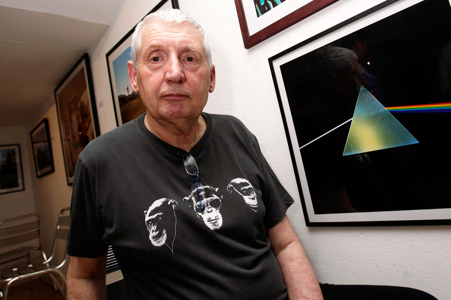

Pink Floyd's artworks were created by Storm Thorgerson. He was behind the Dark Side Of The Moon cover which has become Pink Floyd's most recognisable album. The design idea behind it was to connect with Pink Floyd's live shows which were known for being ambitious, chaotic and their lighting. He also desgined the buring man on the cover of Wish You Were here. This represents a one sided agreement where one side loses. However, the most interesting one is Atom Heart Mother which had a cow on the cover. He did this because Floyd were very experimental at this point and all over the place so he wanted something unexpected. The cow was called Lulubelle III.
